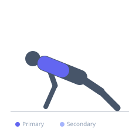
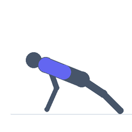

Exercise guide / Scapular Push-Up on Floor
Scapular Push-Up on Floor
The scapular push-up isolates the serratus anterior by performing the protraction-retraction movement of the scapulae while maintaining a rigid plank position. Unlike a standard push-up, the elbows remain fully locked throughout the movement — only the shoulder blades move. This exercise is a cornerstone of shoulder rehabilitation for winging scapula, rotator cuff issues, and overhead athlete conditioning.
Primary muscles
pectoralis minor
Secondary muscles
trapezius lower
trapezius middle
Stabilizers
transverse abdominis
triceps long head
Equipment
No Equipment (Bodyweight)


Starting position
- Assume a standard push-up position with arms fully extended, hands directly under shoulders. Keep the entire body rigid from head to heels.
Setup
- No equipment required. Ensure a non-slip surface. Can be performed from knees for a modified version.
Steps
- Step 1: Begin in a push-up plank with elbows fully locked. Do not bend the elbows at any point.
- Step 2: Allow the chest to drop between the shoulder blades by letting the scapulae retract (pinch together).
- Step 3: Push the floor away with both hands to protract the scapulae, making the upper back rounded and scapulae spread wide.
- Step 4: Hold the protracted position briefly, then return to retraction. Repeat.
Coaching cues
- Arms stay straight throughout — only the shoulder blades move
- Push the floor away as hard as possible at the top
- Think about spreading the shoulder blades wide like wings
Breathing
- Exhale as you protract (spread the shoulder blades). Inhale as you retract (pinch them together).
Range of motion
- The range is relatively small — focus on maximum protraction vs. retraction of the shoulder blades, not on raising or lowering the torso.
Tempo
- 2-1-2-1 (2s retract, 1s hold, 2s protract, 1s hold)
Common mistakes
- Bending the elbows — this converts it into a regular push-up
- Losing the rigid plank body position and sagging at the hips
- Moving too quickly — slow movement ensures scapular isolation
Safety
- Avoid with acute shoulder impingement presenting with protraction pain
- Consult a physiotherapist if you have diagnosed scapular winging
Training
- endurance: 10–20 reps
- mobility: 8–15 reps
- endurance: 2–3 sets
- mobility: 2–3 sets
- Rest: {'endurance': 45, 'mobility': 60}